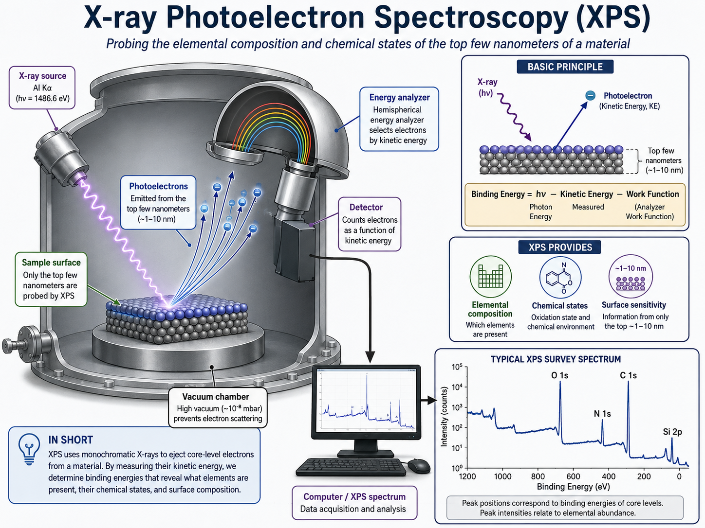
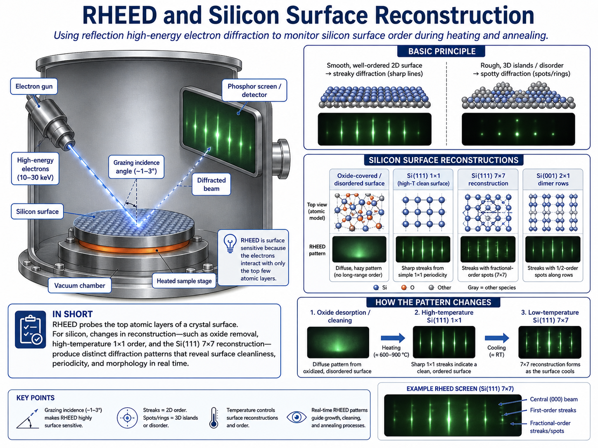

Aabiskar Subedi

I am a graduate student in Physics at the University of North Dakota. My research focuses on molecular beam epitaxy, thin film growth, Transition Metal nitride nanostructures, and surface characterization.
I work with MBE, RHEED, XPS, AFM, XRD, SEM, and thin film growth on silicon substrates.
Portfolio
Metal Nitride Nanowire Growth on Si(110)
Growth nanostructures using molecular beam epitaxy. Characterization includes RHEED, SEM, AFM, XRD, and XPS.
XPS Analysis
XPS fitting is used to study bonding states, oxidation incorporation in thin film samples.

RHEED Study of Silicon Surface Reconstruction
RHEED is used to monitor surface reconstruction and growth behavior during high-temperature annealing and thin film deposition.
